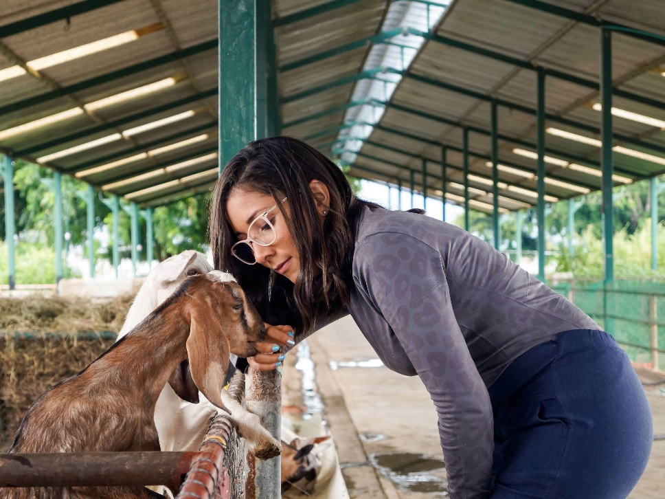
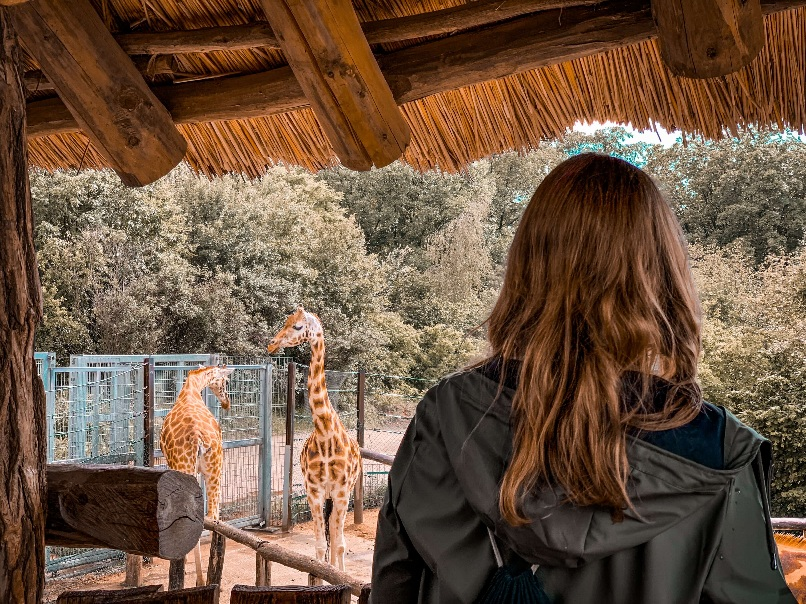
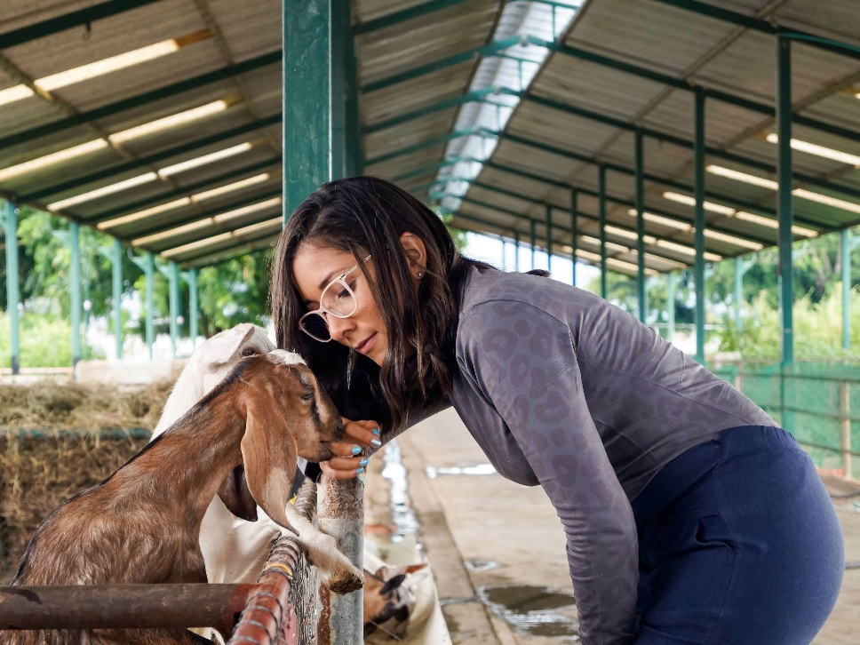
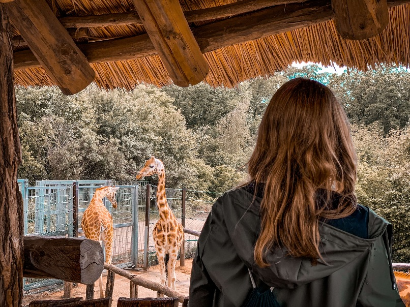
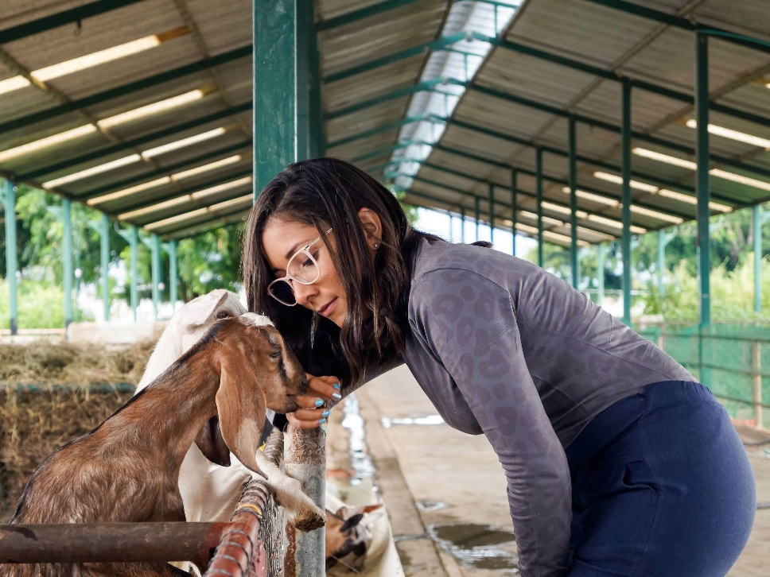
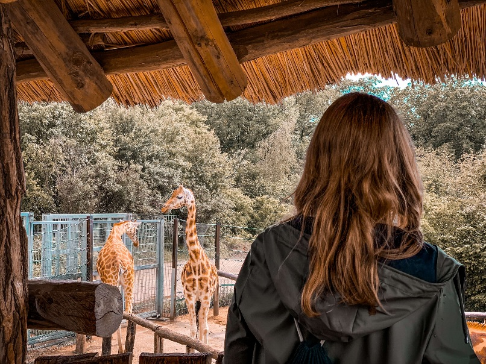

Who are we?
Starting out a few years ago, we were only a small group of five people wanting to make change. All of us have had earlier experience with animals, and therefore we know what we are doing. We have always enjoyed the company of animals, and learned as much about them as we could. When we realized there were a lot of endangered species around the world, we wanted to help. Being an activist wasn't enough for us, and therefore we decided to start making plans to open the Lily Ranch.

